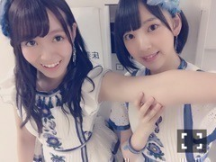
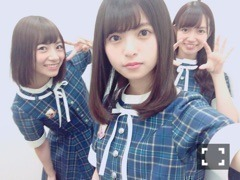

| 2016/07 19 Tue | ひめたん-0o0-その655 |
月曜日は
「2016 FNSうたの夏まつり」に
出演しました！
「ガールズルール」
「浪漫飛行」
「裸足でSummer」
「サザン・ウインド」
浪漫飛行は石井竜也さんと
コラボさせていただきました！
FNSはいつも
いろんなジャンルいろんな世代を超えての
コラボ楽曲が楽しいですよねo(^o^)o
石井竜也さん、ありがとうございました！
Kさん、RADIO FISHさんと
ご挨拶できたのも嬉しかった( ˆωˆ )
トークはよくしてたけど
やっぱり乃木坂46として
いつか音楽番組で
共演するのが夢だった！叶った！
Kちゃんは少し久々だったのですが
番組でソファに座ってる時みたいに
気さくに世間話をしました。笑
世間話？なんだろう。
とにかくあのほんわかした感じ
懐かしい～と、幸せなひと時でした。
オリラジさんは出番が前後だったので
終わったあとの皆さんを捕まえて
ご挨拶しました！！
モニターで観て下さってたみたいで
中田さんから嬉しいお言葉を(・∀・)どや
私たちも観させていただきましたよ～！

素敵なお兄さんたちと共演できて
幸せな一日でした！
そして、私は欅ちゃんと
ご一緒するのは初めてだったので
写真撮ってもらった＼(^o^)／♡

左から
渡邉理佐ちゃん
織田奈那ちゃん
長濱ねるちゃん
石森虹花ちゃん
皆さんキラキラしてた～☆
私もっと頑張らなきゃなと思いました！
個人的にはバレッタ以来のFNS。
他にも、アーティストさんの
パフォーマンスや
同じメンバーからも刺激を受けて
いろんな収穫があった一日でした。
観て下さった皆さん
ありがとうございました！

日曜の夜は、らじらー！サンデー
前回のゲストは声優アーツに上坂すみれさん
乃木坂から堀未央奈ちゃんでした！
プレゼントに、握手会レポに、
乃木リンピックにと
21時台から企画盛りだくさんでした～
自分のを聞くのはめっちゃ恥ずかしいけれど
生駒ちゃんの握手可愛かった♡
そして未央ちゃんと一緒に
22時台も色々やりましたが
中でもにのうで話とほりぽえむ。
にのうでは昨日もまた
すりすりはむさむされたよ(・∀・)ノ
そして未央ちゃんの755で
ほりぽえむ始まったみたいだから
みんな見てみてね☆

次回の乃木坂週は7/31
ゲストは星野みなみちゃんです！
～お知らせ～
雑誌
7/23 UTB
7/23 Samurai ELO
7/23 smart
7/25 ミューズクリップ
7/30 月刊エンタメ
8/6 TopYell
LIVE・TV
7/25 NHKホール 歌番組公開収録
7/27 高校生クイズ 全国一斉大会
リリース
7/27 15th single「裸足でSummer」
8/5 2nd写真集「1時間遅れのI love you.」

EX大衆 発売中です！
この3人で対談してます！
別冊カドカワ Vol.2
月刊ニュータイプ
CD&DLでーた
MONOQLO
ブックリスタ(WEB)
はもうチェックしてくれたかな？
(＊´・ω・＊)
コメント(706)
2016/07/19 23:54